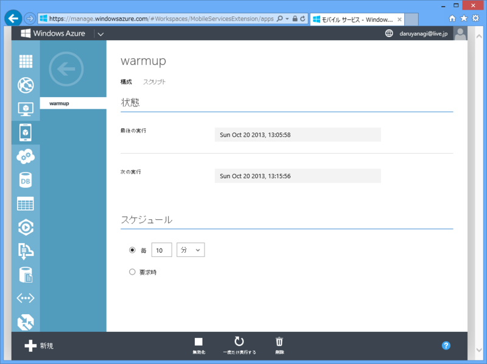
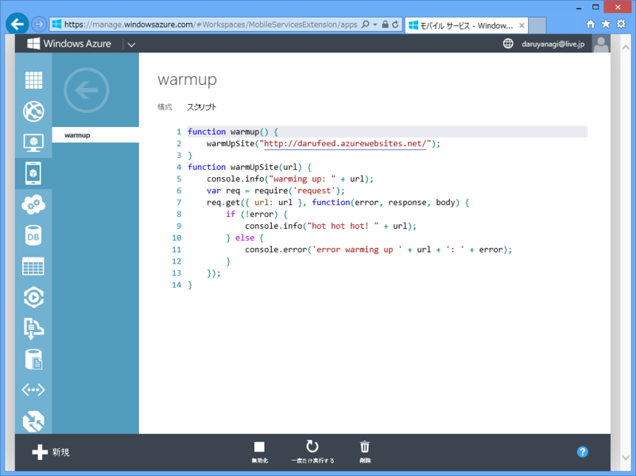

WebMatrix 3: Twitter Bot でも作ってみる。 → Windows Azure Websites に置いてみたった。
公開日：

WebMatrix 3: Twitter Bot （＋リアルタイムログ表示付き）でも作ってみる。 - だるろぐ を Windows Azure Websites に置いてみた――のだけど、なんかすぐに止まってしまう。最初は SignalR 使ってるからかなぁと思い、リアルタイムログ表示の機能をとっぱらってみたのだけれど、やはり止まる。
Windows Azure Webサイトの無料や共有インスタンスの場合、５～20分ほどアクセスが無かった場合はシャットダウンされてリソースが解放されます。そーすると、初回アクセス時に、レスポンスが遅く感じる事象が発生します。
Windows Azureモバイルサービスのジョブスケジューラーで15分起きにリクエストを送信することで、常時ウォームアップし続けることが可能になります。
素敵だけど、怒られそうな話ですね！
怒られたらイヤだけど、とりあえずこの方法を試してみた。結論的には、上手くいった。Twitter のメインアカウント（やなぎ ひでとし（柳 英俊） (@YanagiHidetoshi) | Twitter）に新着情報を配信できるようになった。

スケジューリングは毎分・毎時・毎日・毎月と要求時が設定できるみたい。正時にキッカリ実行したいなんて言う場合には使えないので、10分おきにサイトをキックするだけにして、定期実行の仕組みは自分で実装した（ついでにコードも前よりカッコよく、シンプルにしたった！）。

function warmup() { warmUpSite("http://darufeed.azurewebsites.net/"); } function warmUpSite(url) { console.info("warming up: " + url); var req = require('request'); req.get({ url: url }, function(error, response, body) { if (!error) { console.info("hot hot hot! " + url); } else { console.error('error warming up ' + url + ': ' + error); } }); }
スクリプトは JavaScript で記述。コピペで拝借したけれど、ウォームアップに使うならこれで十分みたい。